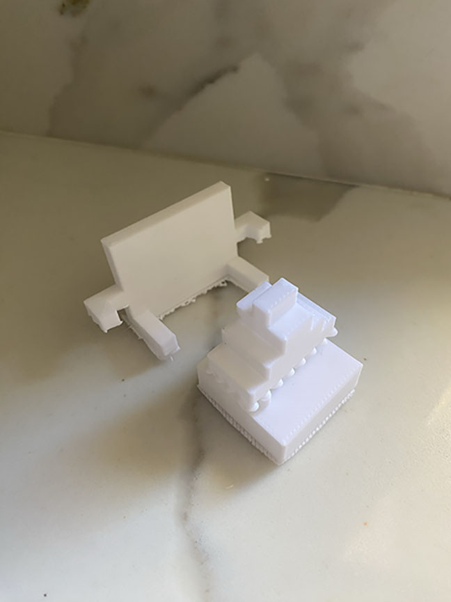

This artwork is inspired by Art and its relationship with Culture. Paintings, sculptures, music, and architecture is all a record of how people lived and what was valued. My sculpture is of a chibi sushi eating a sushi on a sushi table. I hope to visit Japan one day so I can enjoy authentic sushi. The idea to create this small metamorphic sculpture came from my knowledge and appreciation of Japanese art and kawaii culture. Kawaii means bringing cuteness, innocence, and playful charm to items, art, clothes, or design.
